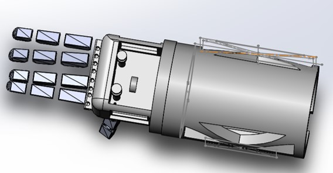
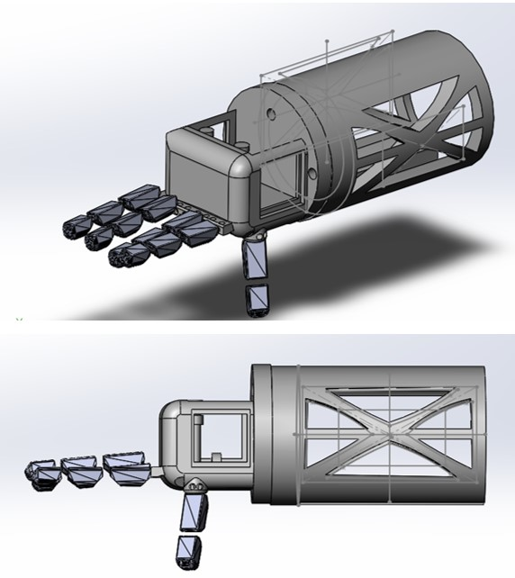

ISABELLA WATSON


Last summer (2018) I was watching 60 minutes when I saw a devastating piece on Syrian hospital bombings. I saw images of children, using tin cans for legs. I wanted to help, so I put my skills to use. The following is the final SolidWorks assembly for a prosthetic hand I plan to donate to victims of Syrian hospital bombings. I hope to work with a non-profit to disseminate the arm abroad.
The actuation will involve a spring system whereby a button is pushed, which pulls fishing line threaded through the posterior face of each finger to contract the hand.

